Getting started
Pluginarium hosts Audio Units so that a Mac can stand in a dawless studio as one more instrument, without opening a DAW. It needs macOS 15 or later on Apple silicon. It hosts Audio Units only, and the plugins are the ones already on your Mac.
- Download the disk image from the download page and open it.
- Drag Pluginarium to Applications and start it from there. The Start screen opens.
- Choose New configuration. If your audio device has inputs, macOS asks once for the microphone; answer it. See Microphone permission.
- The Add dialog is open with the search field ready. Type a few letters of a plugin's name and press Return. The plugin appears as channel 1 of the mixer.
- On the channel, pick the MIDI device under MIDI in, and check Audio out. On a device with four or more outputs the first instrument starts on Out 3–4, not on Out 1–2.
- Press ⌘S and give the configuration a name. Next time it is on the Start screen.
Start screen
The app always opens here, and no audio device is touched until you open a configuration.
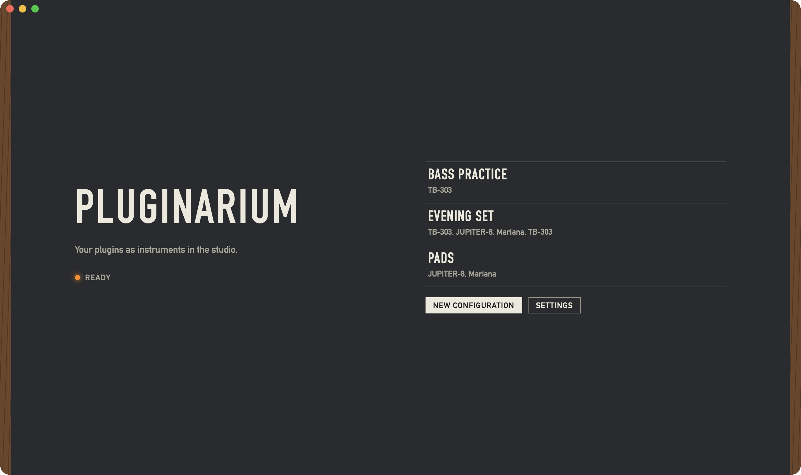
1 2 3 4- 1Ready
- The app is up.
- 2Saved configurations
- One row per configuration, by name, with the plugin of each channel under the name. Click a row to open it in the mixer. With nothing saved yet the list reads No configurations yet. The list scrolls when it no longer fits.
- 3New configuration
- Opens an empty mixer and the Add dialog over it.
- 4Settings
- Opens Settings. Done brings you back here.
Mixer
The main screen. Channels stand side by side like the strips of a console, and the signal runs from top to bottom. When there are more channels than the window shows, the row scrolls sideways.
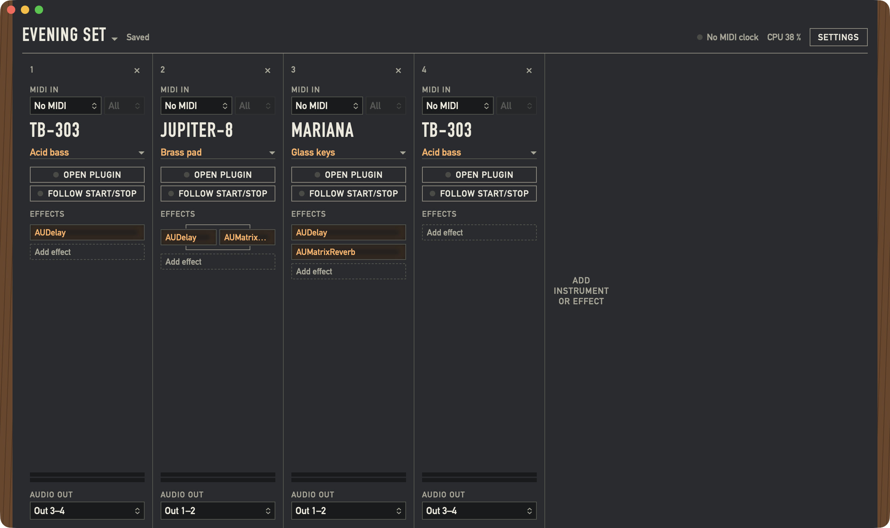
1 2 3- 1Top bar
- The configuration and its save state, the MIDI clock, the CPU load and Settings.
- 2Channels
- One column per instrument or standalone effect, numbered in the order they were added.
- 3Add instrument or effect
- Opens the Add dialog for a new channel.
A configuration plays as soon as it is open. There is no play button: the plugins make sound when they get MIDI or audio.
Top bar
- 1Configuration name ▾
- Opens the configuration menu, below. A configuration without a name yet reads New configuration.
- 2Save state
- Saved or Unsaved changes, with a Save button when there is something to save. See Saving. A configuration that was never saved and has no channels shows nothing here.
- 3MIDI clock
- No MIDI clock with an unlit lamp, or the source and its tempo, such as Hapax clock, 120.0 BPM, with the lamp blinking on the beat. See MIDI clock.
- 4CPU load
- How much of the audio time the app uses, such as CPU 17 %.
- 5Settings
- Opens Settings. Done brings you back to the mixer, and the configuration plays on meanwhile.
Audio messages appear in the same bar, left of the MIDI clock: Audio device missing, Audio could not start, Waiting for microphone access and Microphone access denied, inputs are silent. See Faults.
Configuration menu
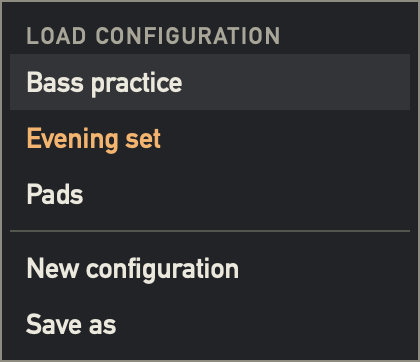
- Load configuration
- Your configurations by name, the current one in amber. Choosing one replaces what plays. Unsaved changes are asked about first.
- New configuration
- Starts an empty configuration and opens the Add dialog.
- Save as
- Saves a copy under a new name, which starts as the old name plus copy. From then on you work in the copy, and the original stays as it was saved.
A channel
A channel holds one instrument plugin or one standalone effect. It shows only what its plugin can use, so a normal synth has no audio input fields. A standalone effect's channel has a slightly different panel colour.
- 1Number and ×
- The channel's place in the stack, and the button that removes it. The app asks Remove channel? first.
- 2MIDI in
- Where the plugin's notes come from. Audio in and Sidechain in appear here too, for a plugin that has them.
- 3Plugin name
- A long name shrinks to fit and is then cut off. The tooltip shows all of it.
- 4Preset selector
- The current sound. Click for the preset menu.
- 5Open plugin
- Opens the plugin's own window.
- 6Follow Start/Stop
- Whether the plugin starts and stops with the MIDI clock.
- 7Effects
- The effects behind the plugin. This part scrolls in a low window.
- 8Level meter
- Two bars for left and right, spanning 60 dB, showing what leaves the channel.
- 9Audio out
- The output channels of the audio device.
MIDI in
Shown for plugins that take MIDI. The left selector lists No MIDI and the MIDI sources macOS reports, under their system names, virtual ports included. The right one picks a MIDI channel: All or 1 to 16. It is dimmed while the device is No MIDI.
A source that is gone stays listed as Hapax (not connected), and the channel shows Hapax is not connected in red. A device behind a MIDI router can stay listed while it is switched off, because macOS still reports the router's port.
Audio in
Shown for a plugin with a main audio input, such as a vocoder, and always for a standalone effect. It lists each input of the audio device as a mono channel, such as In 1, then the stereo pairs, such as In 1–2.
On an instrument it starts at Off, so a synth with an input never gets signal by accident, and a vocoder stays without its microphone until you pick one. A standalone effect has no Off, because it has no other source. A plugin that takes its modulator through a sidechain shows Sidechain in instead.
Sidechain in
Shown for a plugin with a sidechain input. It lists the same inputs as Audio in, with Off first. The source is always an input of the audio device, not another channel. An effect in the chain sets its sidechain in its slot menu.
Audio out
Lists the stereo pairs of the audio device, such as Out 3–4, then each mono channel, such as Out 3. Several channels can share an output; they add up. A route the device does not have stays listed, and the channel says so in red: Out 5–6 is not available on this device.
Open plugin
Open plugin opens the plugin's own window above the mixer, and its lamp lights. The button then reads Close plugin; the window's red button does the same. Each plugin has at most one window, sized as the plugin asks.
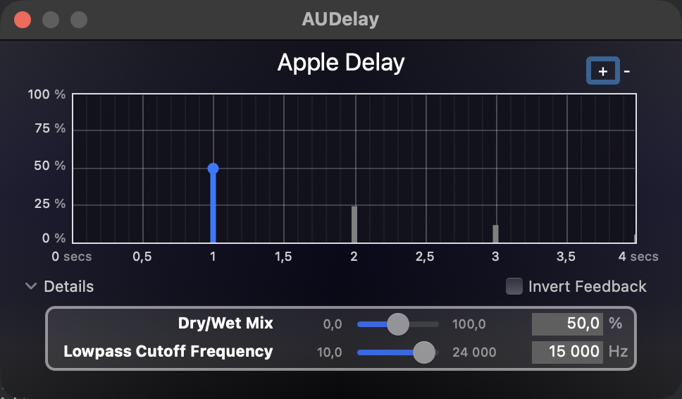
Plugin windows step aside for dialogs and Settings and come back where they were. A plugin that shows no view gets a small window that reads This plugin has no window. An effect opens its window from its slot menu.
Follow Start/Stop
The switch decides what the plugin sees of the MIDI clock's transport. Hold the pointer over it for a tooltip. Tempo reaches every plugin either way.
- Lamp lit, on
- The plugin sees tempo and transport, so an arpeggiator or internal sequencer runs with your sequencer.
- Lamp dark, off
- The plugin sees the tempo only, and to it the transport is always stopped. A delay keeps its tempo, and an internal sequencer stays still.
It starts off on instruments, so a sequencer never starts a part you did not ask for, and on for effects, both standalone and in a chain. The switch is saved in the configuration. Notes and controllers follow MIDI in whatever the switch says.
Presets
A preset is a named snapshot of a plugin's sound. It belongs to the plugin, so it is there in every configuration that uses that plugin. The preset selector of a channel shows the current sound:
- Default sound
- The plugin as it loads, untouched. It can only be chosen when adding a plugin.
- A name
- One of your presets, or a factory preset.
- Custom sound
- You changed the sound in the plugin's window, with no preset picked.
- A name with (changed)
- You changed the sound after picking one of your presets. Factory presets never get this mark.
Plugins do not report that their sound changed. Pluginarium compares the plugin's state when its window opens and when it closes, so a change shows when you close the window or save.
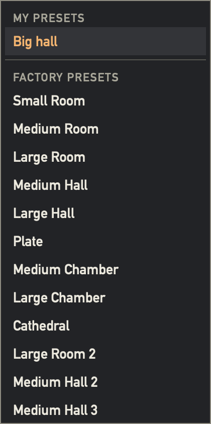
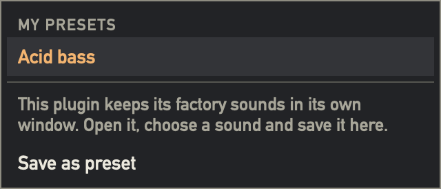
- My presets
- The presets you saved for this plugin, or None saved yet. The current one is in amber.
- Factory presets
- The sounds the plugin lists as an Audio Unit.
- Save as preset
- Asks for a name and stores the sound the plugin has now. The same name for the same plugin replaces the old preset. The field starts from the name the sound has.
Why some plugins show no factory list
A plugin decides whether its factory sounds are visible to a host. Mariana lists them; TB-303 and JUPITER-8 keep them inside their own window. For such a plugin the menu says This plugin keeps its factory sounds in its own window. Open it, choose a sound and save it here. Do that once, and the sound is one of your presets from then on.
What happens to a saved preset
A preset is stored for good the moment you save it, even if you then choose Don't save for the configuration. What waits for the configuration is only the fact that it uses that preset. See Saving. A configuration holds each plugin's full state, so changing a preset later does not change a configuration saved earlier.
Effects
Effects in the chain of a channel process that channel's plugin. They get their signal from the chain, so the only input they can have is a sidechain.
- 1Parallel
- Effects side by side in a row run in parallel, joined by split and merge lines. Up to three share a row. The branches are added at equal level; set the balance with each plugin's own wet and dry controls.
- 2Series
- Rows run from top to bottom, each one feeding the next.
- 3Add effect
- Opens the Add dialog and puts the effect in a new row at the end of the chain.
Slot menu
Click an effect for its menu. An effect that failed to load shows its name in red, with the reason in the tooltip; the channel's plugin plays on.
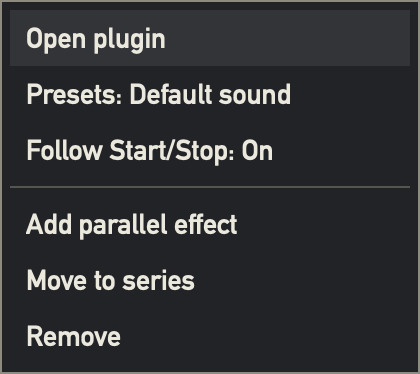
- Open plugin / Close plugin
- The effect's own window.
- Presets: Default sound
- Names the current sound and opens the preset menu.
- Sidechain in: Off
- Only for a plugin with a sidechain. Pick an input of the audio device. The row then reads, for example, Sidechain from In 1.
- Follow Start/Stop: On
- Switches Follow Start/Stop for this effect.
- Add parallel effect
- Opens the Add dialog and puts the effect next to this one. Not offered once three share the row.
- Move to series
- Only in a parallel row. Moves the effect to a new row right below.
- Remove
- Removes the effect at once, without asking.
Add dialog
The same dialog adds a channel, adds an effect and replaces a missing plugin. A new configuration opens it right away, with the search field ready, so a few letters and Return are enough.
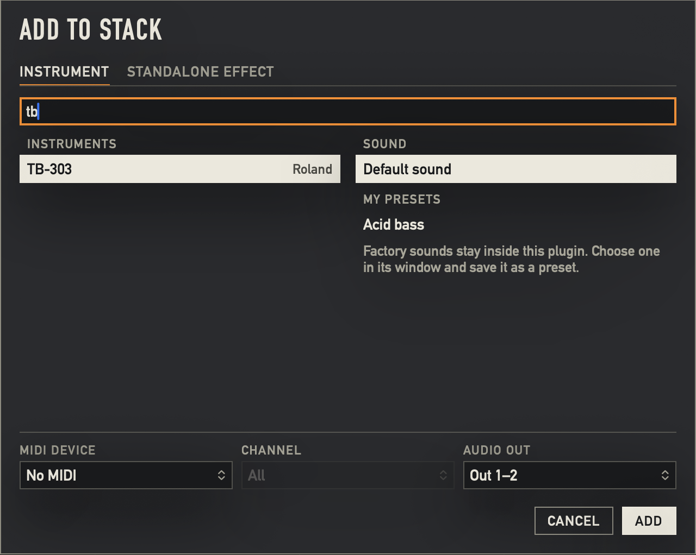
1 2 3 4 5 6- 1Instrument and Standalone effect
- Only when adding a channel. Instruments are Audio Units of type
aumuandaumf, effects areaufx. - 2Search plugins
- Filters by plugin name and vendor as you type. With nothing left it reads No plugin matches this search.
- 3Plugin list
- Recent holds the last five plugins you added, then come All the others. Without recent plugins the list is headed Instruments or Effects.
- 4Sound
- Default sound, then My presets and Factory presets of the selected plugin. A plugin without a factory list shows Factory sounds stay inside this plugin. Choose one in its window and save it as a preset.
- 5Routing
- The fields the plugin has: MIDI device, Channel, Audio in, Sidechain in and Audio out. They start from the position tables, and you can change them here or later on the channel. Only when adding a channel.
- 6Cancel and Add
- The second button reads Replace when replacing a plugin.
The first time you select a plugin, the app loads it once to learn its inputs and presets, and remembers the answer. That can stop the screen for a moment. Audio on the other channels keeps running.
Keys in the dialog
- Letters
- Search.
- ↓ ↑
- Move the selection through the list, wrapping at the ends.
- Return
- Adds the selected plugin.
- Esc
- Cancels.
The three uses
- Add to stack
- A new channel, from Add instrument or effect or a new configuration.
- Add effect to TB-303
- An effect in a chain, from Add effect or Add parallel effect. No tabs and no routing.
- Replace plugin
- A new plugin for a channel whose plugin is missing. The channel keeps its routing and effects. It keeps its audio in if the new plugin has one, and its sidechain in likewise.
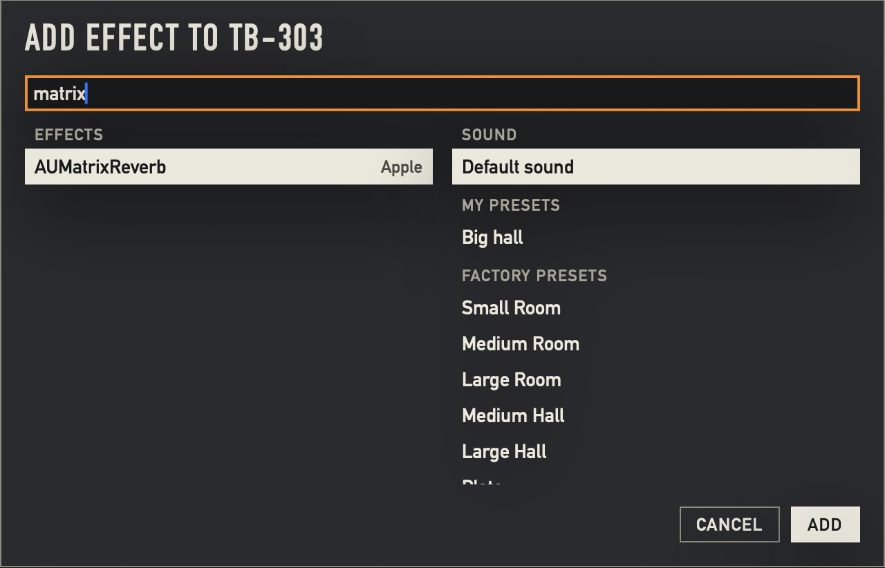
Standalone effects
A standalone effect is a channel of its own. It takes signal from an input of the audio device and sends it to an output, so any hardware instrument wired to your interface can reach it. Add one from the Standalone effect tab. It has no plugin in front of it, and it can have effects of its own.
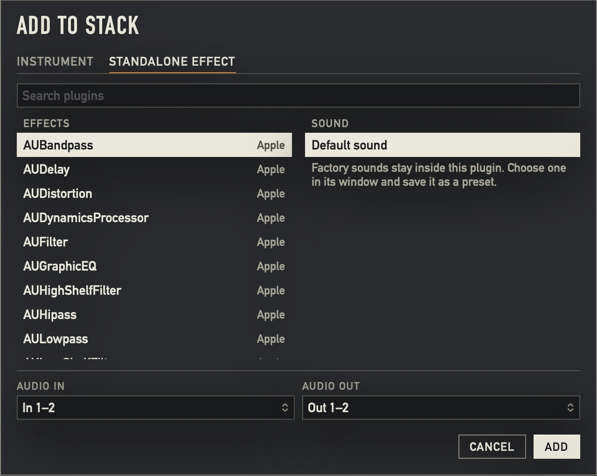
A standalone effect passes its input to its output as soon as it is added. If that output reaches the input again, for example through a microphone near your monitors, it can feed back. Keep the monitors low until the routing is right.
Saving
A configuration holds its channels, routing, effects and the full state of every plugin. Any change to it marks it Unsaved changes, and Save or ⌘S saves it. Save and Save as are also in the File menu. Changes in Settings are not part of a configuration and are stored at once.
While a plugin window is open, the top bar shows Save even next to Saved, because that window may hold a change the app has not heard of. Saving then looks at the open windows first, and does nothing if no sound changed.
After a save a line at the bottom of the window says so, such as Evening set saved.
The questions
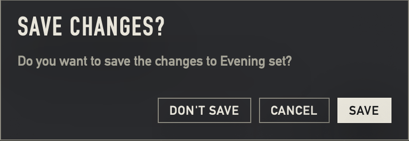
- Save changes?
- Comes when you load another configuration, start a new one or quit with unsaved changes. Save saves and goes on, Don't save goes on and drops the changes, Cancel stays where you are. Return answers Save and Esc answers Cancel.
- Save configuration
- Comes the first time a new configuration is saved, and asks for its name. A name with nothing in it cannot be confirmed.
- Save as
- Asks for the name of the copy.
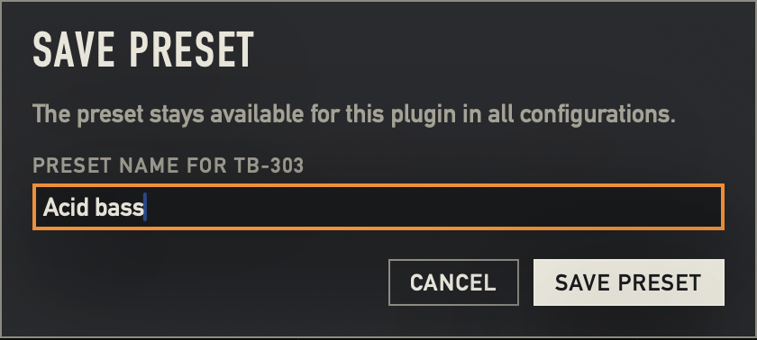
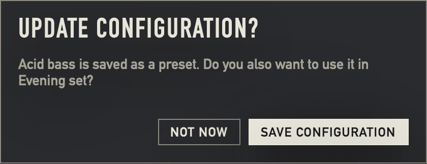
- Save preset
- Asks for the preset's name.
- Update configuration?
- Comes after saving a preset in a configuration that is already saved. Save configuration saves the configuration too; Not now leaves it unsaved. The preset is stored either way.
- Remove channel?
- Comes from the × on a channel. Remove takes the channel and its effects out of the configuration, and that counts as a change like any other.
In a configuration that was never saved, no question comes after saving a preset. A line says Acid bass saved. It joins this configuration when you save it.
A sound the app cannot read from a plugin keeps its last saved state, and the line says so: TB-303 could not be read, its last saved sound was kept.
Settings
Open it from the Start screen, from the top bar, or with ⌘,. Done goes back. Settings belong to the app, not to a configuration, and every change is stored at once.
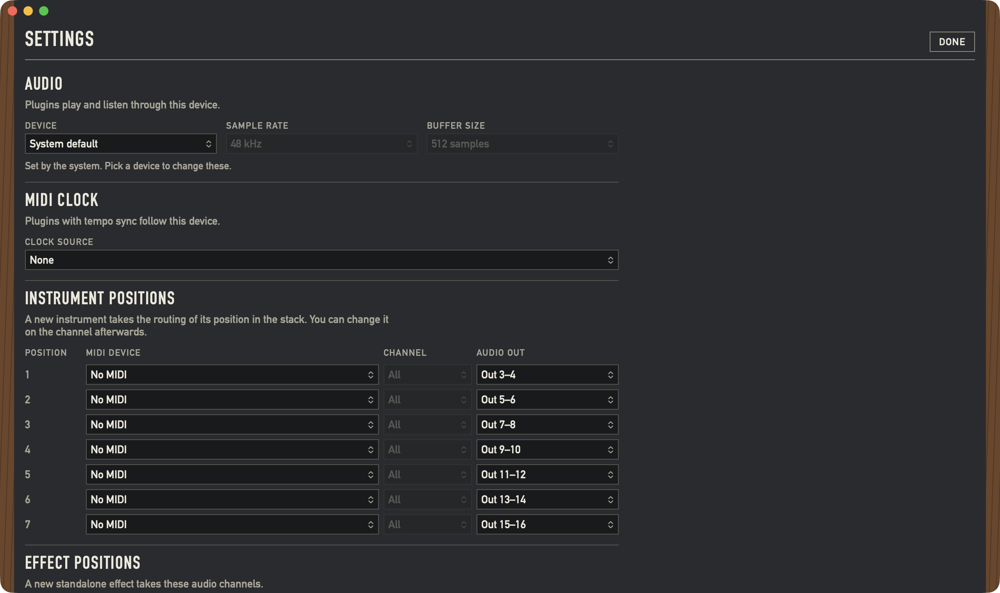
1 2 3 4 5 6- 1Device
- The audio device plugins play and listen through: System default or a device from the list.
- 2Sample rate
- With a picked device: 44.1 kHz, 48 kHz or 96 kHz.
- 3Buffer size
- With a picked device: 64 samples, 128 samples, 256 samples or 512 samples.
- 4Set by the system. Pick a device to change these.
- Shown with System default, when the two fields above only report what runs.
- 5Clock source
- None or a MIDI source. See MIDI clock.
- 6Instrument positions
- See Position tables. Effect positions follow further down.
Audio device: System default or a picked device
- System default
- The app follows the default output of macOS and writes nothing to the device. It runs at the sample rate and buffer size the device already has, and the two fields show those values, dimmed. They cannot be changed here.
- A picked device
- The app writes the sample rate and buffer size to that device when audio starts and each time you change them. The stored defaults are 48 kHz and 128 samples, so picking a device can change the settings it had, for other apps too.
A new device or sample rate restarts audio and reloads the plugins; a new buffer size restarts the device under the same plugins. A picked device that is gone stays listed as (not connected). The list follows what macOS reports while Settings is on screen.
Position tables
A new channel takes its routing from its position in the stack: the first instrument takes row 1 of Instrument positions, the second takes row 2, and so on. Standalone effects count separately in Effect positions. Set the tables once for your studio, and change any channel afterwards if you need to. Changing a table does not change existing channels.
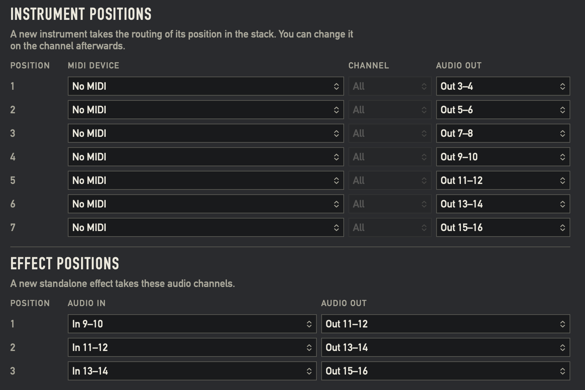
- Instrument positions
- Seven rows, each with MIDI device, Channel and Audio out. They start on No MIDI and Out 3–4, then Out 5–6, up to Out 15–16.
- Effect positions
- Three rows, each with Audio in and Audio out. They start on In 9–10 to Out 11–12, then one pair higher each row.
Beyond the last row, new channels reuse it. If the device does not have a position's channels, the new channel takes the first stereo pair no channel uses, or else the first pair of the device, so it plays at once instead of staying silent.
MIDI clock
Pick the source in Settings under Clock source. Plugins with tempo sync then follow it, with no setup on the channels.
Plugins never receive MIDI clock messages. The app reads the clock and gives each plugin the tempo, the position and whether the transport plays. Start, Stop and Continue from the source drive that transport, and Follow Start/Stop decides who sees it.
- Hapax clock, 120.0 BPM
- Clock is arriving. The lamp blinks on the beat.
- No MIDI clock
- No source is picked, or no clock has arrived for a second. It does not matter whether the source is still connected. Plugins keep the last tempo, or 120 BPM if there has been none. If the source goes silent while playing, the transport stops.
Keyboard
- ⌘S
- Save, in the File menu.
- ⇧⌘S
- Save as, in the File menu.
- ⌘,
- Settings…, in the Pluginarium menu.
- Return and Esc in a dialog
- Return answers the filled button, Esc cancels.
- In an open menu
- ↓ ↑ move, Return or Space chooses, Esc closes. A click anywhere else on the mixer also closes it.
New configuration is in the File menu, without a shortcut. These commands are off while a dialog or Settings is on screen. The keys of the Add dialog are listed with it.
Faults
A configuration always opens. What is missing shows where it belongs, and the rest plays.
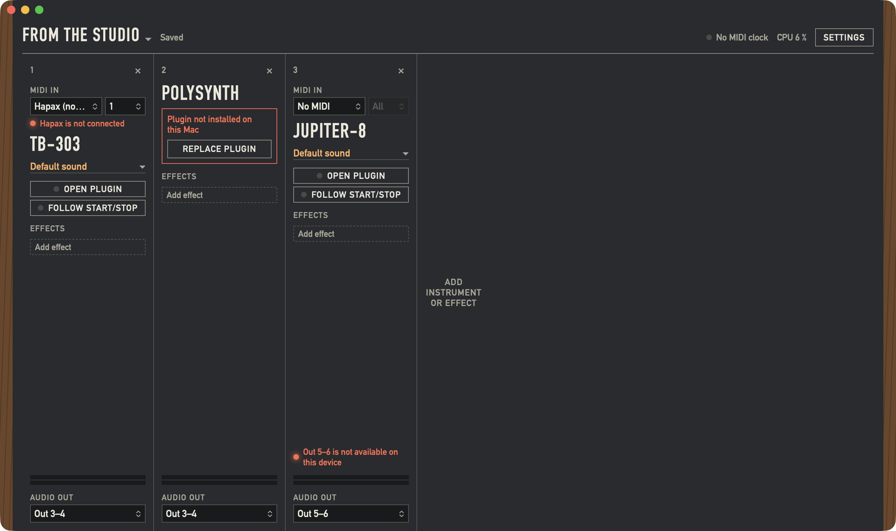
1 2 3| What you see | What it means | What to do |
|---|---|---|
| 1Hapax is not connected | macOS no longer lists this MIDI source. | Connect it, or pick another source under MIDI in. The route comes back by itself when the source returns. |
| 2Plugin not installed on this Mac | The plugin is not on this Mac. | Press Replace plugin and pick another, or install it and open the configuration again. The channel's saved sound stays until you replace it. |
| 3Out 5–6 is not available on this device | The audio device lacks this output, or an input in the same way. | Pick another route on the channel, or use the device that has it. |
| Plugin failed to load | The plugin is there but would not start. The tooltip gives the reason. | Open the configuration again, or check the plugin in another host. |
| An effect's name in red | That effect did not load or is not installed. The tooltip says which. | Remove it in its slot menu or install it. The channel's plugin plays on. |
| Loading | The plugin is still starting. Some take a few seconds. | Wait. |
| Audio device missing | The device is gone. The configuration stays open. | Connect it. The configuration plays again when the device returns. Or pick another device in Settings. |
| Audio could not start | The device refused to start. The tooltip gives the reason. | Check that the device works in other apps. The app tries again at each device change. |
| Waiting for microphone access | macOS is asking you for the microphone. Nothing plays until you answer. | Answer the macOS dialog. See Microphone permission. |
| Microphone access denied, inputs are silent | macOS does not let the app read inputs. Outputs still play. | See Microphone permission. |
| No MIDI clock | No clock arrives from the source in Settings. | Start the clock on your sequencer, or check Clock source. |
| Evening set could not be saved | The file could not be written. The configuration stays unsaved. | Check the disk, then save again. |
| Acid bass could not be loaded | The plugin did not take the preset. | Pick another sound, or check the plugin's own window. |
Microphone permission
macOS treats every audio input as a microphone. The first time you open a configuration on a device that has inputs, macOS asks whether Pluginarium may use the microphone, with the reason Pluginarium plays audio from your interface through your plugins. This happens even if no channel uses an input yet.
Until you answer, no audio device is open: nothing plays, and the top bar reads Waiting for microphone access. Settings, the menus and Quit keep working. Answer the macOS dialog, and the configuration starts. macOS asks only once.
- Allow
- Audio in and Sidechain in work.
- Don't Allow
- Outputs still play, inputs are silent, and the top bar reads Microphone access denied, inputs are silent. Plugins that use no input are not affected.
To change the answer later, turn Pluginarium on in System Settings › Privacy & Security › Microphone and start the app again.
Limits of this version
- Audio Units only, of the types
aumu,aumfandaufx. No VST or VST3, and no plugins that exist for Intel Macs only. - No MIDI learn, and no control of plugin parameters from MIDI controllers.
- No faders, panning or level mixing. Your mixer does that.
- No recording, sequencing or arranging.
- One configuration at a time. Loading another stops what plays, so it is not made for switching during a performance.
- A sidechain comes from an input of the audio device, not from another channel.
- No latency compensation. Audio that passes through the Mac arrives one round trip late, and a plugin played over MIDI sounds later than hardware triggered by the same sequencer. Keep the buffer low, and correct what remains on the sequencer.
- No limiter. The app only silences invalid samples and clips what leaves a channel at +12 dB.
- Channels cannot be reordered, and effects can only be moved out of a parallel row.
- Configurations and presets cannot be renamed or deleted in the app.
Save as gives a copy a new name. They are files in
~/Library/Application Support/Pluginarium; to remove a configuration, delete its file inconfigurationswhile the app is closed. The name is inside the file, not in the file name. - The app does not start with the Mac. Launching it is up to you.
- This version has been used on a MacBook with a four-output interface. Paths through a larger interface, a MIDI router, a hardware clock source and real sidechain plugins are still to be tried in a studio session.